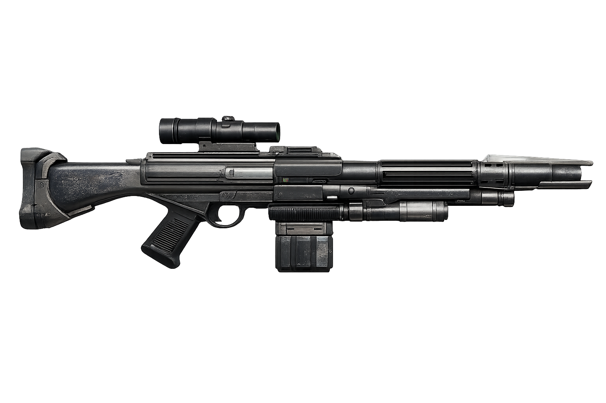
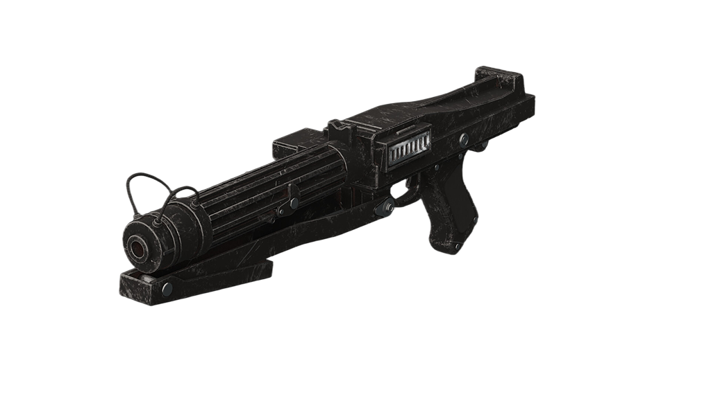
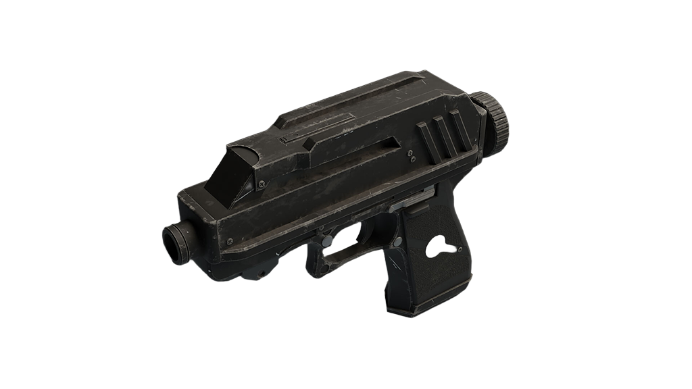
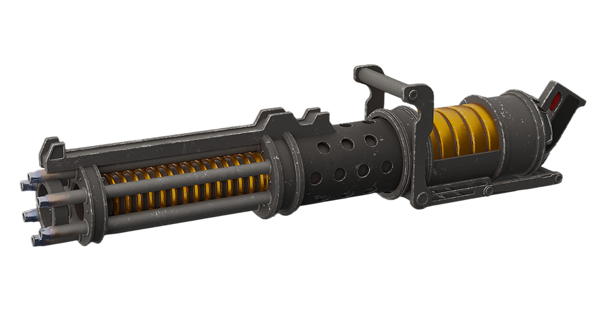
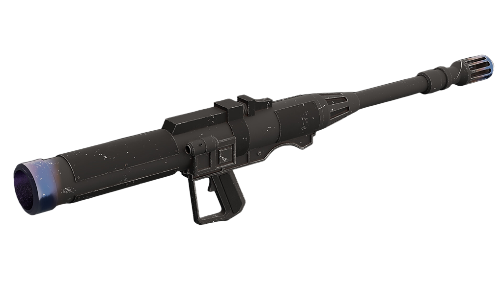
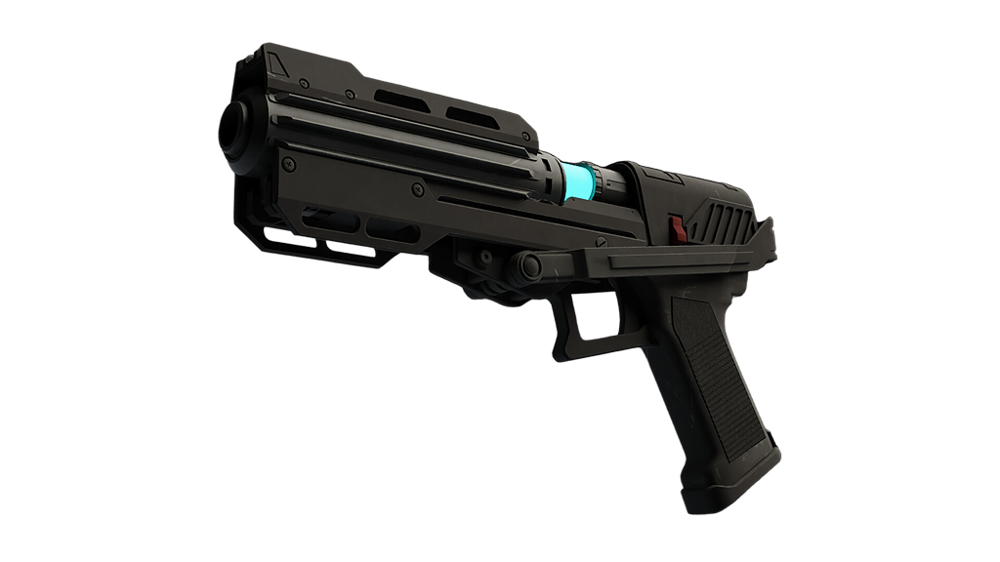
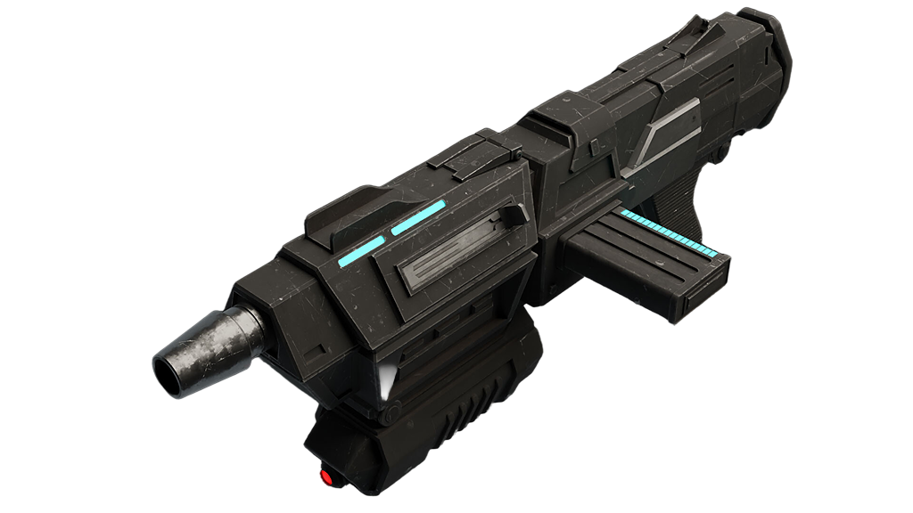
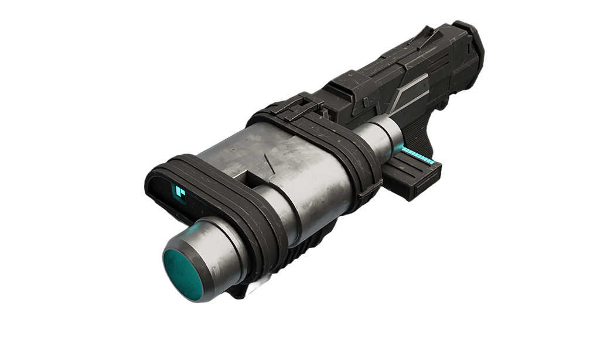
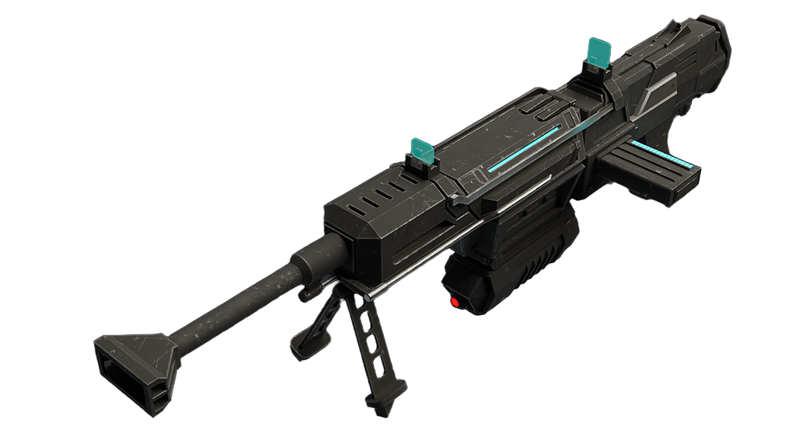

Вооружение республики
Стандартное вооружение Великой Армии Республики

DC-15A — бластерная винтовка
Винтовка, состоящая на вооружении основных войск Великой Армии Республики. Данная бластерная винтовка позволяет изменять параметр настройки силы. Также на винтовку может устанавливаться снайперский прицел. Для выстрелов используются картриджи с газом тибана.
- Модель: DC-15A blaster rifle
- Производитель: BlasTech Industries
- Дальность стрельбы: 400 метров
- Вес: 4 кг
- Ёмкость стандартной энергоячейки: 50 выстрелов

DC-15S — бластерный карабин
Бластерный карабин меньший по размерам, чем винтовка DC-15A. DC-15S не может похвастаться радиусом поражения своего собрата DC-15A, но его легче использовать. Используя такой бластер, нет нужды носить с собой тяжёлые обоймы с патронами. На карабин мог устанавливаться снайперский прицел.
- Модель: DC-15S blaster carbine
- Производитель: BlasTech Industries
- Дальность стрельбы: 300 метров
- Вес: 3.8 кг
- Ёмкость стандартной энергоячейки: 50 выстрелов

DC-17 — бластерный пистолет
Вторичное оружие всех войск Великой Армии Республики. Предназначено для ведения боя на ближних дистанциях.
- Модель: DC-17 blaster pistol
- Производитель: BlasTech Industries
- Дальность стрельбы: 120 метров
- Вес: 1 кг
- Ёмкость стандартной энергоячейки: 25 выстрелов

Z-6 — роторный бластер
Тяжёлое пехотное оружие поддержки — вращающаяся бластерная пушка Z-6 по прозвищу «лучемёт», рассчитанная на бой одиночки с группой. Слишком большое воздействие, попросту говоря перегрев, вело к повреждению контура, в результате чего целый ствол надо было заменять. Этот недостаток энергетического оружия был успешно преодолён в Z-6 путём чередования каналов гальванизации за счёт использования шести стволов, собранных в быстровращающийся пакет, завёрнутый в охлаждающий сердечник.
- Модель: Z-6
- Производитель: Merr-Sonn Munitions, Inc.
- Дальность стрельбы: 300 метров
- Вес: 16 кг
- Ёмкость стандартной энергоячейки: 250 выстрелов

RPS-6 — ракетная установка
Ракетные пусковые установки RPS-6 (англ. RPS-6 rocket launcher). Во время Войн клонов их использовали войска как Галактической Республики, так и Конфедерации независимых систем. Они могли уничтожать объекты, прикрытые лучевыми щитами.
- Модель: RPS-6
- Производитель: Sienar Fleet Systems
- Дальность поражения: 1 км
- Вес: 5,5 кг
- Ёмкость энергоячейки: 25 выстрелов
- Оглушающий режим: нет

DC-15SA — ручной бластер
Пистолет был разработан корпорацией BlasTech перед Войной Клонов специально для солдат подразделений специального назначения Великой Армии Республики. Его основное отличие от других армейских пистолетов было в том, что он, подобно карабину DC-17m, мог интегрироваться с броней типа «Катарн», которая использовалась клонами-коммандос. Во время Войны Клонов пистолеты DC-15SA использовались только клонами-коммандос и АРКами (ARC Troopers).
- Модель: Ручной бластер DC-15 Side Arm
- Производитель: BlasTech Industries
- Дальность стрельбы: 80 метров
- Вес: 0.8 кг
- Ёмкость энергоячейки: 20 выстрелов
- Стоимость: 400 кредитов

Штурмовая
Снайперская
ГранатомётDC-17m — модульная оружейная система
Модульная оружейная система DC-17m — конфигурационная боевая система, используемая клонами-коммандос Галактической Республики. Отличительная черта: возможность изменения конфигураций на снайперскую винтовку, ручной гранатомёт, штурмовую винтовку, заменив всего несколько деталей.
- Модель: DC-17m
- Производитель: BlasTech Industries
- Вес: 5 кг
- Штурмовая винтовка: 60 выстрелов
- Снайперская винтовка: 5 выстрелов
- Ручной гранатомёт: 1 заряд